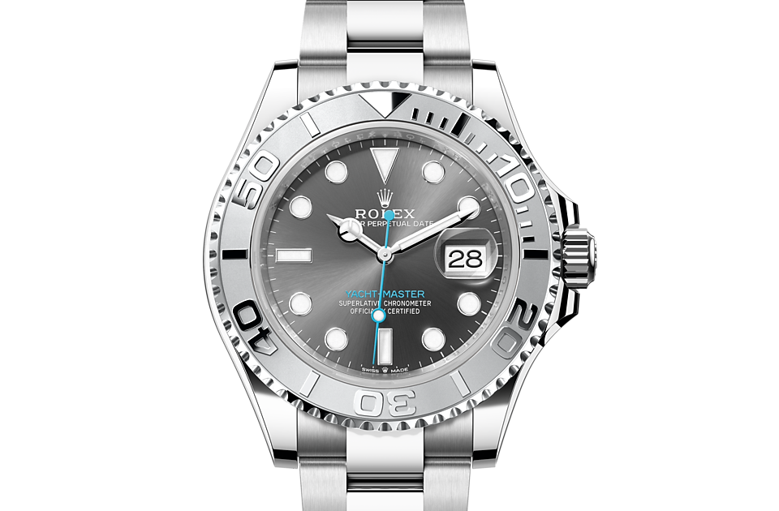

A watch is a portable timepiece intended to be carried or worn by a person. It is designed to keep a consistent movement despite the motions caused by the person's activities. A wristwatch is designed to be worn around the wrist, attached by a watch strap or other type of bracelet, including metal bands, leather straps, or any other kind of bracelet. A pocket watch is designed for a person to carry in a pocket, often attached to a chain.
Watches were developed in the 17th century from spring-powered clocks, which appeared as early as the 14th century. During most of its history the watch was a mechanical device, driven by clockwork, powered by winding a mainspring, and keeping time with an oscillating balance wheel. These are called mechanical watches.[1][2] In the 1960s the electronic quartz watch was invented, which was powered by a battery and kept time with a vibrating quartz crystal. By the 1980s the quartz watch had taken over most of the market from the mechanical watch. Historically, this is called the quartz revolution (also known as quartz crisis in Switzerland).[3][4] Developments in the 2010s include smart watches, which are elaborate computer-like electronic devices designed to be worn on a wrist. They generally incorporate timekeeping functions, but these are only a small subset of the smartwatch's facilities.
Watches evolved from portable spring-driven clocks, which first appeared in 15th-century Europe. The first timepieces to be worn, made in the 16th century beginning in the German cities of Nuremberg and Augsburg, were transitional in size between clocks and watches.[14] Nuremberg clockmaker Peter Henlein (or Henle or Hele) (1485–1542) is often credited as the inventor of the watch.[15][16] However, other German clockmakers were creating miniature timepieces during this period, and there is no evidence Henlein was the first.[16][17] Watches were not widely worn in pockets until the 17th century. One account suggests that the word "watch" came from the Old English word woecce – which meant "watchman" – because town watchmen used the technology to keep track of their shifts at work.[18] Another says that the term came from 17th-century sailors, who used the new mechanisms to time the length of their shipboard watches (duty shifts).[19]
A rise in accuracy occurred in 1657 with the addition of the balance spring to the balance wheel, an invention disputed both at the time and ever since between Robert Hooke and Christiaan Huygens. This innovation increased watches' accuracy enormously, reducing error from perhaps several hours per day[21] to perhaps 10 minutes per day,[22] resulting in the addition of the minute hand to the face from around 1680 in Britain and around 1700 in France.[23]The increased accuracy of the balance wheel focused attention on errors caused by other parts of the movement, igniting a two-century wave of watchmaking innovation. The first thing to be improved was the escapement. The verge escapement was replaced in quality watches by the cylinder escapement, invented by Thomas Tompion in 1695 and further developed by George Graham in the 1720s. Improvements in manufacturing – such as the tooth-cutting machine devised by Robert Hooke – allowed some increase in the volume of watch production, although finishing and assembling was still done by hand until well into the 19th century.
The movement of a watch is the mechanism that measures the passage of time and displays the current time (and possibly other information including date, month, and day). Movements may be entirely mechanical, entirely electronic (potentially with no moving parts), or they might be a blend of both. Most watches intended mainly for timekeeping today have electronic movements, with mechanical hands on the watch face indicating the time.
Compared to electronic movements, mechanical watches are less accurate, often with errors of seconds per day; are sensitive to position, temperature,[53] and magnetism;[54] are costly to produce; require regular maintenance and adjustments; and are more prone to failures. Nevertheless, mechanical watches attract interest from consumers, particularly among watch collectors. Skeleton watches are designed to display the mechanism for aesthetic purposes.
Traditionally, watches have displayed the time in analog form, with a numbered dial upon which are mounted at least a rotating hour hand and a longer, rotating minute hand. Many watches also incorporate a third hand that shows the current second of the current minute. In quartz watches this second hand typically snaps to the next marker every second. In mechanical watches, the second hand may appear to glide continuously, though in fact it merely moves in smaller steps, typically one-fifth to one-tenth of a second, corresponding to the beat (half period) of the balance wheel. With a duplex escapement, the hand advances every two beats (full period) of the balance wheel, typically 1⁄2-second; this happens every four beats (two periods, 1 second), with a double duplex escapement.
A digital display shows the time as a number, e.g., 12:08 instead of a shorthand pointing towards the number 12 and a long hand 8/60 of the way around the dial. The digits are usually shown as a seven-segment display. The first digital mechanical pocket watches appeared in the late 19th century. In the 1920s, the first digital mechanical wristwatches appeared.
Customarily, watches provide the time of day, giving at least the hour and minute, and often the second. Many also provide the current date, and some (called "complete calendar" or "triple date" watches) display the day of the week and the month as well. However, many watches also provide a great deal of information beyond the basics of time and date. Some watches include alarms. Other elaborate and more expensive watches, both pocket and wrist models, also incorporate striking mechanisms or repeater functions, so that the wearer could learn the time by the sound emanating from the watch. This announcement or striking feature is an essential characteristic of true clocks and distinguishes such watches from ordinary timepieces. This feature is available on most digital watches.
Here is my original source. A big thanks to everyone who contributed to that!
Please check out these other cool articles !
This is Lily Lee's page about the tv show Bones
If thats not for you Kaj Weterrrings made a cool page about the Illuminati.
And finally Ryan Ong did some good work here.